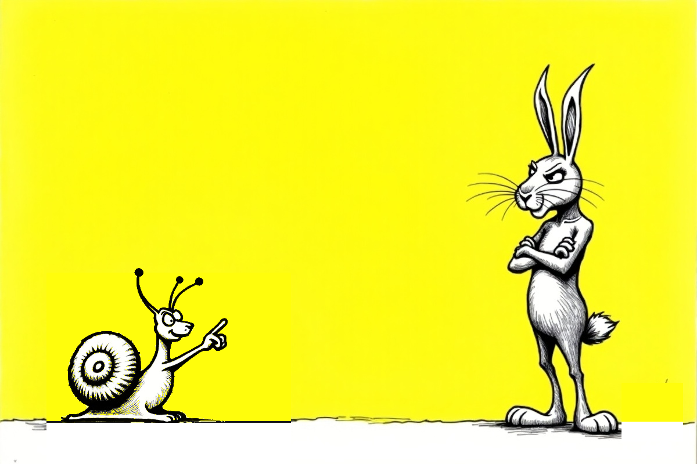

Third piece · 23 August 2026
It All Started with a Plate of Pasta
Last session we wrestled with the Stoics — with philosophy. This time we stepped back and asked, from the very start: where did this thing called "slow living" actually come from? What follows is the edited transcript of that research session. The questions and the interruptions are mine; across from me, once again, my patient research partner — an AI.
Hi Claude, last piece we talked about the Stoics. Who are we chewing on today — did you decide?
I did — with a small twist: today I picked not a "who" but a "when." You said "history first, then philosophy," so let's start where the whole thing was born. And that birth is surprisingly precise, even a little comic.
Rome, 1986. A McDonald's opens at the foot of the Spanish Steps. An Italian named Carlo Petrini is furious — but not with placards or broken glass; with a plate of pasta in his hand. "Against your fast food," he says, "my cause is slow food." In 1989 a manifesto is signed in Paris and the movement is officially born. And the emblem they choose? A snail — yes, the very snail we keep teasing in the cartoons.
The lovely part: that huge philosophical conversation we now call "slow living" doesn't begin with philosophy at all. It begins with a plate. And from that plate a whole "slow" family grows: slow cities (Cittaslow), slow fashion, and finally the slow living we're chasing. So today's appetizer is that plate: Petrini and the birth of Slow Food.
I'm curious about the snail, but I'm more curious about Petrini's real gripe. Can you tell me that first?
That's the crux. What drove Petrini wild wasn't "the burger is ugly"; it was the fear of standardization. Fast food's promise: the burger you bite in Rome tastes identical to the one in Tokyo. Petrini saw that if this sameness spread, grandma's recipe, the grape that grows only in that one valley, that village's cheese — all of it would vanish one by one. And they were planting it in the heart of Rome, the most specific city there is. The most generic thing, in the most particular place.
His second gripe: speed severs connection. Fast food cuts you off from where your food comes from — you don't see the soil, the farmer, the season; eating stops being a relationship and turns into "refuelling." But here's what makes Petrini interesting: he was no health-food puritan; he loved pleasure. His argument was that real pleasure requires knowing your food is "good, clean and fair." So he didn't reject pleasure; he married it to responsibility.
And the essence — the part that speaks straight to our project: for Petrini, "fast" was never about minutes. Speed was the name for a whole way of living that cuts the ties binding us to things — to food, to place, to each other. That McDonald's was only a symbol. From the very start, the movement's cause wasn't "being slow"; it was restoring the connection that speed had broken.
Let me jump in here. This was my teenage years; the Soviet Union was cracking, perestroika and all. Around then the two old rivals, Russia and the US, sat down at the table for the first time. As I remember it, two of the first things the US wanted were the first McDonald's in Russia and lifting the ban on Coca-Cola. You can imagine what those two brands mean for cultural imperialism. Just because of that — with a bit of my old METU-student streak in the mix — I've refused to eat at McDonald's my whole life. I know the reaction is a little irrational, but it's my small protest against cultural imperialism.
Jumping in there is spot on, because that moment of yours touches the backbone of the piece. And your memory doesn't fail you: the USSR's first McDonald's opened on 31 January 1990 in Moscow, on Pushkin Square; people queued for hours in the cold. Let me give you one bonus fact: the brand that really cracked the USSR wasn't Coca-Cola but Pepsi — they got in back in 1972, and not for cash but by barter (in exchange for vodka; at one point the barter even came to include Soviet warships). So the "they demanded it at the table" part drifts a bit into legend; but the essence you're pointing at — these brands as symbols, as spearheads — is exactly right.
There's even an academic name for it: "Coca-colonization." But the concept that really serves us is sociologist George Ritzer's "McDonaldization": the point isn't the burger, it's a whole society being rebuilt on fast-food logic — efficiency, calculability, predictability, control. So your thirty-year boycott isn't "irrational" at all to me; it's symbolic, but symbolic isn't empty. Think about it: in 1986 in Rome Petrini reacted with a plate of pasta, and around the same years a METU student in Ankara reacted with a boycott — from two ends of the world, to the same symbol. You gave a "slow" reflex before the manifesto was even signed.
(In fairness: there's another side — for some, this globalization also brought access and choice, and McDonald's itself localized wherever it went. But that's the topic for another appetizer.)
Let's save McDonaldization to memory and come back to it in another session for sure. But let's not close this one without the snail.
A promise is a promise. The snail wasn't chosen by accident; it's a deliberate talisman. Slow Food was born in Bra, a small town in Italy's Piedmont — and right next door, Cherasco has been famous for its snails throughout history; there's even a snail-breeding institute there. So the creature was both local and (for Italians) edible. The emblem didn't drop from the sky; it grew from that soil.
But the real poetry of the choice is elsewhere. The snail is slow, yes — but that's not the point. The snail carries its home on its back. So it has no urge to "catch up" anywhere; wherever it goes, it's already home, with nowhere else it needs to reach. It doesn't hurry, because it has no reason to.
The manifesto puts it almost exactly this way: our cause isn't laziness; it's defending calm, lasting pleasure against the crowd that "mistakes frenzy for efficiency." The snail is the badge of that — a little pin worn against speed. And the part that makes us smile: what's our club called? "No Time to Hurry." It turns out we've unknowingly made a snail's life motto our name. The circle closes perfectly.

So what did I take from this session?
Here's what I realized: I didn't come to this "slow" thing through philosophy or books at all. I came to it before it even had a name — through a reflex, a boycott. Through that kid, angry at cultural imperialism, saying "no" to a brand. It turns out that reaction was a small, personal version of the one Petrini gave in Rome with a plate of pasta.
And one more thing stuck: slow living didn't begin as a grand, fancy philosophy. It began with a plate, with a snail, with a very concrete "hold on a second." That did me good; it means you don't have to be a philosopher first to step into this. We've also filed McDonaldization away — we'll come back to it in its own session. At the next stops we'll ease into philosophy, too. No hurry — we've got no time to hurry, you know.
If you're curious where this journal came from: what we mean by slow living. No hurry anyway.